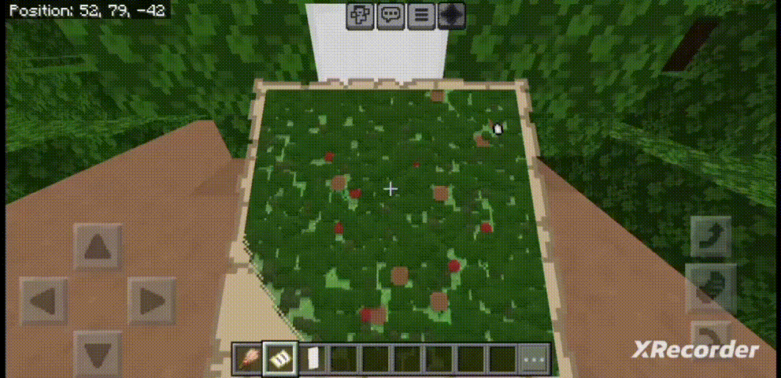

Enjoy Banner Map Markers, an exclusive feature of Java edition, in Minecraft PE/BE using this addon. This addon is very easy to install you just need to read this page very carefully and you'll get it working in no time.
THE ADDON WORKING:

HOW TO USE?
> Download the provided Behavior pack.
> Import it into Minecraft.
> Apply to your world.
> Make sure "Beta APIs" experimental toggle is enabled.
> Place a Banner or go to an already placed Banner.
> Take a brush and use it on the Banner.
> A dialog box will appear, select the color and click submit.
> A new Marker of the selected color will appear.
> To remove it, click again on the same Banner.
> You can repeat this process until you get the color you want.
REQUIREMENTS:
> Turn on "Beta APIs" experimental toggle.
Copyright message:
All of the content of this addon is my original work and if you want to redistribute or use any part of this addon, however little it may be, please ask for my permission first.
Supported Minecraft Versions:
> 1.19.80
> 1.20.0
> 1.20.10
> 1.20.12
> 1.20.30
> 1.20.40
> 1.20.50
> 1.20.60
> 1.20.70
> 1.20.80